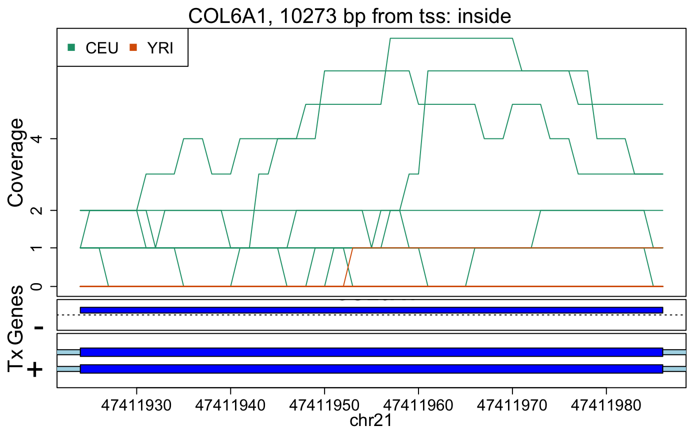
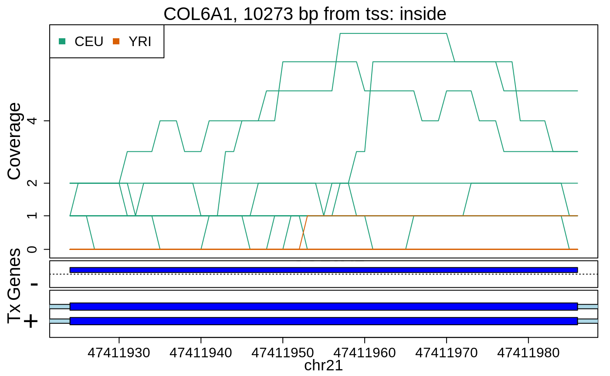

vignettes/GenomicState.Rmd
GenomicState.RmdR is an open-source statistical environment which can be easily modified to enhance its functionality via packages. GenomicState is a R package available via GitHub. R can be installed on any operating system from CRAN after which you can install GenomicState by using the following commands in your R session:
if (!requireNamespace("BiocManager", quietly = TRUE))
install.packages("BiocManager")
BiocManager::install("GenomicState")
## Check that you have a valid Bioconductor installation
BiocManager::valid()GenomicState is based on many other packages and in particular in those that have implemented the infrastructure needed for dealing with annotation data. That is, packages like rtracklayer that allow you to import the data. A GenomicState user is not expected to deal with those packages directly but will need to be familiar with derfinder and derfinderPlot to understand the results GenomicState generates. Furthermore, it’ll be useful for the user to know the syntax of AnnotationHub (Morgan, 2019) in order to query and load the data provided by this package.
If you are asking yourself the question “Where do I start using Bioconductor?” you might be interested in this blog post.
As package developers, we try to explain clearly how to use our packages and in which order to use the functions. But R and Bioconductor have a steep learning curve so it is critical to learn where to ask for help. The blog post quoted above mentions some but we would like to highlight the Bioconductor support site as the main resource for getting help regarding Bioconductor. Other alternatives are available such as creating GitHub issues and tweeting. However, please note that if you want to receive help you should adhere to the posting guidelines. It is particularly critical that you provide a small reproducible example and your session information so package developers can track down the source of the error.
We hope that GenomicState will be useful for your research. Please use the following information to cite the package and the overall approach. Thank you!
## Citation info
citation('GenomicState')
#>
#> To cite package 'GenomicState' in publications use:
#>
#> Leonardo Collado-Torres (2019). GenomicState: Build and access
#> GenomicState objects for use with derfinder tools from sources
#> like Gencode. R package version 0.99.5.
#> https://github.com/LieberInstitute/GenomicState
#>
#> A BibTeX entry for LaTeX users is
#>
#> @Manual{,
#> title = {GenomicState: Build and access GenomicState objects for use with derfinder tools from
#> sources like Gencode},
#> author = {Leonardo Collado-Torres},
#> year = {2019},
#> note = {R package version 0.99.5},
#> url = {https://github.com/LieberInstitute/GenomicState},
#> }The GenomicState package was developed for speeding up analyses that require these objects and in particular those that rely on Gencode annotation data. The package GenomicState provides functions for building GenomicState objects from diverse annotation sources such as Gencode. It also provides a way to load pre-computed GenomicState objects if you are working at JHPCE. These GenomicState objects are normally created using derfinder::makeGenomicState() and can be used for annotating regions with derfinder::annotateRegions() which are in turn used by derfinderPlot::plotRegionCoverage().
To get started, load the GenomicState package.
library('GenomicState')Using the GencodeStateHub() function you can query and download the data from GenomicState using AnnotationHub (Morgan, 2019).
## Query AnnotationHub for the GenomicState object for Gencode v31 on
## hg19 coordinates
hub_query_gs_gencode_v31_hg19 <- GenomicStateHub(version = '31',
genome = 'hg19',
filetype = 'GenomicState')
#> snapshotDate(): 2019-10-22
hub_query_gs_gencode_v31_hg19
#> AnnotationHub with 1 record
#> # snapshotDate(): 2019-10-22
#> # names(): AH75184
#> # $dataprovider: GENCODE
#> # $species: Homo sapiens
#> # $rdataclass: list
#> # $rdatadateadded: 2019-10-22
#> # $title: GenomicState for Gencode v31 on hg19 coordinates
#> # $description: Gencode v31 GenomicState from derfinder::makeGenomicSta...
#> # $taxonomyid: 9606
#> # $genome: GRCh37
#> # $sourcetype: GTF
#> # $sourceurl: ftp://ftp.ebi.ac.uk/pub/databases/gencode/Gencode_human/r...
#> # $sourcesize: NA
#> # $tags: c("Gencode", "GenomicState", "hg19", "v31")
#> # retrieve record with 'object[["AH75184"]]'
## Check the metadata
mcols(hub_query_gs_gencode_v31_hg19)
#> DataFrame with 1 row and 15 columns
#> title dataprovider
#> <character> <character>
#> AH75184 GenomicState for Gencode v31 on hg19 coordinates GENCODE
#> species taxonomyid genome
#> <character> <integer> <character>
#> AH75184 Homo sapiens 9606 GRCh37
#> description
#> <character>
#> AH75184 Gencode v31 GenomicState from derfinder::makeGenomicState() on hg19 coordinates. This is useful for packages such as derfinder and derfinderPlot. For more information, check the GenomicState package.
#> coordinate_1_based maintainer
#> <integer> <character>
#> AH75184 1 Leonardo Collado-Torres <lcolladotor@gmail.com>
#> rdatadateadded preparerclass
#> <character> <character>
#> AH75184 2019-10-22 GenomicState
#> tags rdataclass
#> <list> <character>
#> AH75184 c("Gencode", "GenomicState", "hg19", "v31") list
#> rdatapath
#> <character>
#> AH75184 GenomicState/gencode/gencode_v31_hg19_GenomicState.rda
#> sourceurl
#> <character>
#> AH75184 ftp://ftp.ebi.ac.uk/pub/databases/gencode/Gencode_human/release_31/GRCh37_mapping/gencode.v31lift37.annotation.gtf.gz
#> sourcetype
#> <character>
#> AH75184 GTF
## Access the file through AnnotationHub
if(length(hub_query_gs_gencode_v31_hg19) == 1) {
hub_gs_gencode_v31_hg19 <- hub_query_gs_gencode_v31_hg19[[1]]
hub_gs_gencode_v31_hg19
}
#> downloading 0 resources
#> loading from cache
#> $fullGenome
#> Loading required package: GenomicRanges
#> Loading required package: stats4
#> Loading required package: S4Vectors
#>
#> Attaching package: 'S4Vectors'
#> The following object is masked from 'package:base':
#>
#> expand.grid
#> Loading required package: IRanges
#> Loading required package: GenomeInfoDb
#> GRanges object with 659263 ranges and 5 metadata columns:
#> seqnames ranges strand | theRegion tx_id
#> <Rle> <IRanges> <Rle> | <character> <IntegerList>
#> 1 chr1 11869-12227 + | exon 1,2
#> 2 chr1 12228-12612 + | intron 1,2
#> 3 chr1 12613-12721 + | exon 1,2
#> 4 chr1 12722-12974 + | intron 1,2
#> 5 chr1 12975-13052 + | exon 2
#> ... ... ... ... . ... ...
#> 659259 chrY 59208555-59214013 * | intergenic <NA>
#> 659260 chrY 59276440-59311662 * | intergenic <NA>
#> 659261 chrY 59311997-59318040 * | intergenic <NA>
#> 659262 chrY 59318921-59330251 * | intergenic <NA>
#> 659263 chrY 59360549-59373566 * | intergenic <NA>
#> tx_name gene
#> <CharacterList> <IntegerList>
#> 1 ENST00000450305.2_1,ENST00000456328.2_1 26085
#> 2 ENST00000450305.2_1,ENST00000456328.2_1 26085
#> 3 ENST00000450305.2_1,ENST00000456328.2_1 26085
#> 4 ENST00000450305.2_1,ENST00000456328.2_1 26085
#> 5 ENST00000450305.2_1 26085
#> ... ... ...
#> 659259 <NA> <NA>
#> 659260 <NA> <NA>
#> 659261 <NA> <NA>
#> 659262 <NA> <NA>
#> 659263 <NA> <NA>
#> symbol
#> <CharacterList>
#> 1 DDX11L1
#> 2 DDX11L1
#> 3 DDX11L1
#> 4 DDX11L1
#> 5 DDX11L1
#> ... ...
#> 659259 <NA>
#> 659260 <NA>
#> 659261 <NA>
#> 659262 <NA>
#> 659263 <NA>
#> -------
#> seqinfo: 24 sequences from hg19 genome
#>
#> $codingGenome
#> GRanges object with 878954 ranges and 5 metadata columns:
#> seqnames ranges strand | theRegion tx_id
#> <Rle> <IRanges> <Rle> | <character> <IntegerList>
#> 1 chr1 9869-11868 + | promoter 1,2
#> 2 chr1 11869-12227 + | exon 1,2
#> 3 chr1 12228-12612 + | intron 1,2
#> 4 chr1 12613-12721 + | exon 1,2
#> 5 chr1 12722-12974 + | intron 1,2
#> ... ... ... ... . ... ...
#> 878950 chrY 59208555-59212013 * | intergenic <NA>
#> 878951 chrY 59276440-59311662 * | intergenic <NA>
#> 878952 chrY 59313997-59318040 * | intergenic <NA>
#> 878953 chrY 59320921-59328251 * | intergenic <NA>
#> 878954 chrY 59362549-59373566 * | intergenic <NA>
#> tx_name gene
#> <CharacterList> <IntegerList>
#> 1 ENST00000450305.2_1,ENST00000456328.2_1 26085
#> 2 ENST00000450305.2_1,ENST00000456328.2_1 26085
#> 3 ENST00000450305.2_1,ENST00000456328.2_1 26085
#> 4 ENST00000450305.2_1,ENST00000456328.2_1 26085
#> 5 ENST00000450305.2_1,ENST00000456328.2_1 26085
#> ... ... ...
#> 878950 <NA> <NA>
#> 878951 <NA> <NA>
#> 878952 <NA> <NA>
#> 878953 <NA> <NA>
#> 878954 <NA> <NA>
#> symbol
#> <CharacterList>
#> 1 DDX11L1
#> 2 DDX11L1
#> 3 DDX11L1
#> 4 DDX11L1
#> 5 DDX11L1
#> ... ...
#> 878950 <NA>
#> 878951 <NA>
#> 878952 <NA>
#> 878953 <NA>
#> 878954 <NA>
#> -------
#> seqinfo: 24 sequences from hg19 genomeTo show how we can use these objects, first we build those for Gencode version 31 on hg19 coordinates.
## Load the example TxDb object
## or start from scratch with:
## txdb_v31_hg19_chr21 <- gencode_txdb(version = '31', genome = 'hg19',
## chrs = 'chr21')
txdb_v31_hg19_chr21 <- AnnotationDbi::loadDb(
system.file('extdata', 'txdb_v31_hg19_chr21.sqlite',
package = 'GenomicState')
)
#> Loading required package: GenomicFeatures
#> Loading required package: AnnotationDbi
#> Loading required package: Biobase
#> Welcome to Bioconductor
#>
#> Vignettes contain introductory material; view with
#> 'browseVignettes()'. To cite Bioconductor, see
#> 'citation("Biobase")', and for packages 'citation("pkgname")'.
#>
#> Attaching package: 'Biobase'
#> The following object is masked from 'package:AnnotationHub':
#>
#> cache
## Build the GenomicState and annotated genes
genes_v31_hg19_chr21 <- gencode_annotated_genes(txdb_v31_hg19_chr21)
#> 2019-10-22 13:13:13 annotating the transcripts
#> No annotationPackage supplied. Trying org.Hs.eg.db.
#> Loading required package: org.Hs.eg.db
#>
#> Getting TSS and TSE.
#> Getting CSS and CSE.
#> Getting exons.
#> Annotating genes.
#> 'select()' returned 1:many mapping between keys and columns
gs_v31_hg19_chr21 <- gencode_genomic_state(txdb_v31_hg19_chr21)
#> 2019-10-22 13:13:28 making the GenomicState object
#> extendedMapSeqlevels: sequence names mapped from NCBI to UCSC for species homo_sapiens
#> 'select()' returned 1:1 mapping between keys and columns
#> 2019-10-22 13:13:36 finding gene symbols
#> 'select()' returned 1:many mapping between keys and columns
#> 2019-10-22 13:13:37 adding gene symbols to the GenomicStateYou can alternatively use the files hosted in AnnotationHub (Morgan, 2019) which will be faster in general.
## Create the AnnotationHub object once and re-use it to speed up things
ah <- AnnotationHub::AnnotationHub()
#> snapshotDate(): 2019-10-22
## Find the TxDb object for hg19 Gencode version 31
hub_query_txdb_gencode_v31_hg19 <- GenomicStateHub(version = '31',
genome = 'hg19',
filetype = 'TxDb', ah = ah)
hub_query_txdb_gencode_v31_hg19
#> AnnotationHub with 1 record
#> # snapshotDate(): 2019-10-22
#> # names(): AH75182
#> # $dataprovider: GENCODE
#> # $species: Homo sapiens
#> # $rdataclass: TxDb
#> # $rdatadateadded: 2019-10-22
#> # $title: TxDb for Gencode v31 on hg19 coordinates
#> # $description: Gencode v31 TxDb object on hg19 coordinates. This is us...
#> # $taxonomyid: 9606
#> # $genome: GRCh37
#> # $sourcetype: GTF
#> # $sourceurl: ftp://ftp.ebi.ac.uk/pub/databases/gencode/Gencode_human/r...
#> # $sourcesize: NA
#> # $tags: c("Gencode", "GenomicState", "hg19", "v31")
#> # retrieve record with 'object[["AH75182"]]'
## Now the Annotated Genes for hg19 Gencode v31
hub_query_genes_gencode_v31_hg19 <- GenomicStateHub(version = '31',
genome = 'hg19',
filetype = 'AnnotatedGenes', ah = ah)
hub_query_genes_gencode_v31_hg19
#> AnnotationHub with 1 record
#> # snapshotDate(): 2019-10-22
#> # names(): AH75183
#> # $dataprovider: GENCODE
#> # $species: Homo sapiens
#> # $rdataclass: GRanges
#> # $rdatadateadded: 2019-10-22
#> # $title: Annotated genes for Gencode v31 on hg19 coordinates
#> # $description: Gencode v31 annotated genes from bumphunter::annotateTr...
#> # $taxonomyid: 9606
#> # $genome: GRCh37
#> # $sourcetype: GTF
#> # $sourceurl: ftp://ftp.ebi.ac.uk/pub/databases/gencode/Gencode_human/r...
#> # $sourcesize: NA
#> # $tags: c("Gencode", "GenomicState", "hg19", "v31")
#> # retrieve record with 'object[["AH75183"]]'
## And finally the GenomicState for hg19 Gencode v31
hub_query_gs_gencode_v31_hg19 <- GenomicStateHub(version = '31',
genome = 'hg19',
filetype = 'GenomicState', ah = ah)
hub_query_gs_gencode_v31_hg19
#> AnnotationHub with 1 record
#> # snapshotDate(): 2019-10-22
#> # names(): AH75184
#> # $dataprovider: GENCODE
#> # $species: Homo sapiens
#> # $rdataclass: list
#> # $rdatadateadded: 2019-10-22
#> # $title: GenomicState for Gencode v31 on hg19 coordinates
#> # $description: Gencode v31 GenomicState from derfinder::makeGenomicSta...
#> # $taxonomyid: 9606
#> # $genome: GRCh37
#> # $sourcetype: GTF
#> # $sourceurl: ftp://ftp.ebi.ac.uk/pub/databases/gencode/Gencode_human/r...
#> # $sourcesize: NA
#> # $tags: c("Gencode", "GenomicState", "hg19", "v31")
#> # retrieve record with 'object[["AH75184"]]'
## If you want to access the files use the double bracket AnnotationHub syntax
## to retrieve the R objects from the web.
if(FALSE) {
hub_txdb_gencode_v31_hg19 <- hub_query_txdb_gencode_v31_hg19[[1]]
hub_genes_gencode_v31_hg19 <- hub_query_genes_gencode_v31_hg19[[1]]
hub_gs_gencode_v31_hg19 <- hub_query_gs_gencode_v31_hg19[[1]]
}Next we load a series of related packages that use the objects we created with GenomicState or downloaded from AnnotationHub (Morgan, 2019).
## Load external packages
library('derfinder')
library('derfinderPlot')
#> Registered S3 method overwritten by 'GGally':
#> method from
#> +.gg ggplot2
library('bumphunter')
#> Loading required package: foreach
#> Loading required package: iterators
#> Loading required package: locfit
#> locfit 1.5-9.1 2013-03-22
library('GenomicRanges')Next we can prepare the needed for running derfinderPlot::plotRegionCoverage() where we use the TxDb object, the GenomicState and the annotated genes we prepared for Gencode v31 on hg19.
## Some example regions from derfinder (set the chromosome lengths)
regions <- genomeRegions$regions[1:2]
seqlengths(regions) <- seqlengths(txdb_v31_hg19_chr21)[
names(seqlengths(regions))
]
## Annotate them
nearestAnnotation <- matchGenes(x = regions, subject = genes_v31_hg19_chr21)
annotatedRegions <- annotateRegions(regions = regions,
genomicState = gs_v31_hg19_chr21$fullGenome, minoverlap = 1)
#> 2019-10-22 13:13:51 annotateRegions: counting
#> 2019-10-22 13:13:51 annotateRegions: annotating
## Obtain fullCov object
fullCov <- list('chr21' = genomeDataRaw$coverage)
regionCov <- getRegionCoverage(fullCov=fullCov, regions=regions)
#> 2019-10-22 13:13:52 getRegionCoverage: processing chr21
#> 2019-10-22 13:13:52 getRegionCoverage: done processing chr21And now we can make the example plot as shown below.
## now make the plot
plotRegionCoverage(regions=regions, regionCoverage=regionCov,
groupInfo=genomeInfo$pop, nearestAnnotation=nearestAnnotation,
annotatedRegions=annotatedRegions, whichRegions=1:2,
txdb = txdb_v31_hg19_chr21)
#> 2019-10-22 13:13:52 plotRegionCoverage: extracting Tx info
#> 2019-10-22 13:13:52 plotRegionCoverage: getting Tx plot info
You can also access the data locally using the function local_metadata() which works at JHPCE or anywhere where you have re-created the files from this package. This returns a data.frame() which you can subset. It also inclused the R code for loading the data which you can do using eval(parse(text = local_metadata()$loadCode)) as shown below.
## Get the local metadata
meta <- local_metadata()
## Subset to the data of interest, lets say hg19 TxDb for v31
interest <- subset(meta, RDataClass == 'TxDb' & Tags == 'Gencode:v31:hg19')
## Next you can load the data
if(file.exists(interest$RDataPath)) {
## This only works at JHPCE
eval(parse(text = interest$loadCode))
## Explore the loaded object (would be gencode_v31_hg19_txdb in this case)
gencode_v31_hg19_txdb
}The objects provided by GenomicState through AnnotationHub (Morgan, 2019) were built using code like the one included below which is how the Gencode version 23 for hg19 files were built.
outdir <- 'gencode'
dir.create(outdir, showWarnings = FALSE)
## Build and save the TxDb object
gencode_v23_hg19_txdb <- gencode_txdb('23', 'hg19')
saveDb(gencode_v23_hg19_txdb,
file = file.path(outdir, 'gencode_v23_hg19_txdb.sqlite'))
## Build and save the annotateTranscripts output
gencode_v23_hg19_annotated_genes<- gencode_annotated_genes(
gencode_v23_hg19_txdb
)
save(gencode_v23_hg19_annotated_genes,
file = file.path(outdir, 'gencode_v23_hg19_annotated_genes.rda'))
## Build and save the GenomicState
gencode_v23_hg19_GenomicState <- gencode_genomic_state(
gencode_v23_hg19_txdb
)
save(gencode_v23_hg19_GenomicState,
file = file.path(outdir, 'gencode_v23_hg19_GenomicState.rda'))For more details check the source files:
## R commands for building the files:
system.file('scripts', 'make-data_gencode_human.R',
package = 'GenomicState')
#> [1] "/private/var/folders/cx/n9s558kx6fb7jf5z_pgszgb80000gn/T/RtmpLnhUxz/temp_libpathda9073de6f4b/GenomicState/scripts/make-data_gencode_human.R"
## The above file was created by this one:
system.file('scripts', 'generate_make_data_gencode_human.R',
package = 'GenomicState')
#> [1] "/private/var/folders/cx/n9s558kx6fb7jf5z_pgszgb80000gn/T/RtmpLnhUxz/temp_libpathda9073de6f4b/GenomicState/scripts/generate_make_data_gencode_human.R"The GenomicState package (Collado-Torres, 2019) was made possible thanks to:
Code for creating the vignette
## Create the vignette
library('rmarkdown')
system.time(render('GenomicState.Rmd'))
## Extract the R code
library('knitr')
knit('GenomicState.Rmd', tangle = TRUE)Date the vignette was generated.
#> [1] "2019-10-22 13:13:53 EDT"Wallclock time spent generating the vignette.
#> Time difference of 1.104 minsR session information.
#> ─ Session info ───────────────────────────────────────────────────────────────────────────────────────────────────────
#> setting value
#> version R version 3.6.1 (2019-07-05)
#> os macOS Mojave 10.14.6
#> system x86_64, darwin15.6.0
#> ui X11
#> language (EN)
#> collate en_US.UTF-8
#> ctype en_US.UTF-8
#> tz America/New_York
#> date 2019-10-22
#>
#> ─ Packages ───────────────────────────────────────────────────────────────────────────────────────────────────────────
#> package * version date lib source
#> acepack 1.4.1 2016-10-29 [2] CRAN (R 3.6.0)
#> AnnotationDbi * 1.47.1 2019-08-20 [2] Bioconductor
#> AnnotationFilter 1.9.0 2019-05-02 [2] Bioconductor
#> AnnotationHub * 2.17.10 2019-10-01 [2] Bioconductor
#> askpass 1.1 2019-01-13 [2] CRAN (R 3.6.0)
#> assertthat 0.2.1 2019-03-21 [2] CRAN (R 3.6.0)
#> backports 1.1.5 2019-10-02 [2] CRAN (R 3.6.0)
#> base64enc 0.1-3 2015-07-28 [2] CRAN (R 3.6.0)
#> bibtex 0.4.2 2017-06-30 [2] CRAN (R 3.6.0)
#> Biobase * 2.45.1 2019-09-04 [2] Bioconductor
#> BiocFileCache * 1.9.1 2019-06-03 [2] Bioconductor
#> BiocGenerics * 0.31.6 2019-09-19 [2] Bioconductor
#> BiocManager 1.30.8 2019-10-16 [2] CRAN (R 3.6.1)
#> BiocParallel 1.19.5 2019-10-20 [2] Bioconductor
#> BiocStyle * 2.13.2 2019-06-12 [2] Bioconductor
#> biomaRt 2.41.9 2019-10-01 [2] Bioconductor
#> Biostrings 2.53.2 2019-07-09 [2] Bioconductor
#> biovizBase 1.33.1 2019-08-23 [2] Bioconductor
#> bit 1.1-14 2018-05-29 [2] CRAN (R 3.6.0)
#> bit64 0.9-7 2017-05-08 [2] CRAN (R 3.6.0)
#> bitops 1.0-6 2013-08-17 [2] CRAN (R 3.6.0)
#> blob 1.2.0 2019-07-09 [2] CRAN (R 3.6.0)
#> bookdown 0.14 2019-10-01 [2] CRAN (R 3.6.0)
#> BSgenome 1.53.2 2019-08-28 [2] Bioconductor
#> bumphunter * 1.27.0 2019-05-02 [2] Bioconductor
#> checkmate 1.9.4 2019-07-04 [2] CRAN (R 3.6.0)
#> cli 1.1.0 2019-03-19 [2] CRAN (R 3.6.0)
#> cluster 2.1.0 2019-06-19 [2] CRAN (R 3.6.1)
#> codetools 0.2-16 2018-12-24 [2] CRAN (R 3.6.1)
#> colorspace 1.4-1 2019-03-18 [2] CRAN (R 3.6.0)
#> crayon 1.3.4 2017-09-16 [2] CRAN (R 3.6.0)
#> curl 4.2 2019-09-24 [2] CRAN (R 3.6.1)
#> data.table 1.12.6 2019-10-18 [2] CRAN (R 3.6.0)
#> DBI 1.0.0 2018-05-02 [2] CRAN (R 3.6.0)
#> dbplyr * 1.4.2 2019-06-17 [2] CRAN (R 3.6.0)
#> DelayedArray 0.11.8 2019-10-08 [2] Bioconductor
#> derfinder * 1.19.9 2019-09-21 [2] Bioconductor
#> derfinderHelper 1.19.3 2019-09-17 [2] Bioconductor
#> derfinderPlot * 1.19.3 2019-09-17 [2] Bioconductor
#> desc 1.2.0 2018-05-01 [2] CRAN (R 3.6.0)
#> dichromat 2.0-0 2013-01-24 [2] CRAN (R 3.6.0)
#> digest 0.6.22 2019-10-21 [2] CRAN (R 3.6.1)
#> doRNG 1.7.1 2018-06-22 [2] CRAN (R 3.6.0)
#> dplyr 0.8.3 2019-07-04 [2] CRAN (R 3.6.0)
#> ensembldb 2.9.6 2019-09-10 [2] Bioconductor
#> evaluate 0.14 2019-05-28 [2] CRAN (R 3.6.0)
#> fastmap 1.0.1 2019-10-08 [2] CRAN (R 3.6.0)
#> foreach * 1.4.7 2019-07-27 [2] CRAN (R 3.6.0)
#> foreign 0.8-72 2019-08-02 [2] CRAN (R 3.6.0)
#> Formula 1.2-3 2018-05-03 [2] CRAN (R 3.6.0)
#> fs 1.3.1 2019-05-06 [2] CRAN (R 3.6.0)
#> GenomeInfoDb * 1.21.2 2019-09-27 [2] Bioconductor
#> GenomeInfoDbData 1.2.1 2019-07-27 [2] Bioconductor
#> GenomicAlignments 1.21.7 2019-09-11 [2] Bioconductor
#> GenomicFeatures * 1.37.4 2019-07-09 [2] Bioconductor
#> GenomicFiles 1.21.0 2019-05-02 [2] Bioconductor
#> GenomicRanges * 1.37.17 2019-10-11 [2] Bioconductor
#> GenomicState * 0.99.5 2019-10-22 [1] Bioconductor
#> GGally 1.4.0 2018-05-17 [2] CRAN (R 3.6.0)
#> ggbio 1.33.2 2019-08-24 [2] Bioconductor
#> ggplot2 3.2.1 2019-08-10 [2] CRAN (R 3.6.0)
#> glue 1.3.1 2019-03-12 [2] CRAN (R 3.6.0)
#> graph 1.63.0 2019-05-02 [2] Bioconductor
#> gridExtra 2.3 2017-09-09 [2] CRAN (R 3.6.0)
#> gtable 0.3.0 2019-03-25 [2] CRAN (R 3.6.0)
#> Hmisc 4.2-0 2019-01-26 [2] CRAN (R 3.6.0)
#> hms 0.5.1 2019-08-23 [2] CRAN (R 3.6.0)
#> htmlTable 1.13.2 2019-09-22 [2] CRAN (R 3.6.1)
#> htmltools 0.4.0 2019-10-04 [2] CRAN (R 3.6.0)
#> htmlwidgets 1.5.1 2019-10-08 [2] CRAN (R 3.6.0)
#> httpuv 1.5.2 2019-09-11 [2] CRAN (R 3.6.0)
#> httr 1.4.1 2019-08-05 [2] CRAN (R 3.6.0)
#> interactiveDisplayBase 1.23.0 2019-05-02 [2] Bioconductor
#> IRanges * 2.19.17 2019-10-11 [2] Bioconductor
#> iterators * 1.0.12 2019-07-26 [2] CRAN (R 3.6.1)
#> jsonlite 1.6 2018-12-07 [2] CRAN (R 3.6.0)
#> knitcitations * 1.0.10 2019-09-15 [2] CRAN (R 3.6.0)
#> knitr 1.25 2019-09-18 [2] CRAN (R 3.6.1)
#> later 1.0.0 2019-10-04 [2] CRAN (R 3.6.0)
#> lattice 0.20-38 2018-11-04 [2] CRAN (R 3.6.1)
#> latticeExtra 0.6-28 2016-02-09 [2] CRAN (R 3.6.0)
#> lazyeval 0.2.2 2019-03-15 [2] CRAN (R 3.6.0)
#> limma 3.41.18 2019-10-13 [2] Bioconductor
#> locfit * 1.5-9.1 2013-04-20 [2] CRAN (R 3.6.0)
#> lubridate 1.7.4 2018-04-11 [2] CRAN (R 3.6.0)
#> magrittr 1.5 2014-11-22 [2] CRAN (R 3.6.0)
#> MASS 7.3-51.4 2019-03-31 [2] CRAN (R 3.6.1)
#> Matrix 1.2-17 2019-03-22 [2] CRAN (R 3.6.1)
#> matrixStats 0.55.0 2019-09-07 [2] CRAN (R 3.6.0)
#> memoise 1.1.0 2017-04-21 [2] CRAN (R 3.6.0)
#> mime 0.7 2019-06-11 [2] CRAN (R 3.6.0)
#> munsell 0.5.0 2018-06-12 [2] CRAN (R 3.6.0)
#> nnet 7.3-12 2016-02-02 [2] CRAN (R 3.6.1)
#> openssl 1.4.1 2019-07-18 [2] CRAN (R 3.6.0)
#> org.Hs.eg.db * 3.8.2 2019-07-27 [2] Bioconductor
#> OrganismDbi 1.27.1 2019-08-17 [2] Bioconductor
#> pillar 1.4.2 2019-06-29 [2] CRAN (R 3.6.0)
#> pkgconfig 2.0.3 2019-09-22 [2] CRAN (R 3.6.1)
#> pkgdown 1.4.1 2019-09-15 [2] CRAN (R 3.6.0)
#> pkgmaker 0.27 2018-05-25 [2] CRAN (R 3.6.0)
#> plyr 1.8.4 2016-06-08 [2] CRAN (R 3.6.0)
#> prettyunits 1.0.2 2015-07-13 [2] CRAN (R 3.6.0)
#> progress 1.2.2 2019-05-16 [2] CRAN (R 3.6.0)
#> promises 1.1.0 2019-10-04 [2] CRAN (R 3.6.0)
#> ProtGenerics 1.17.4 2019-08-20 [2] Bioconductor
#> purrr 0.3.3 2019-10-18 [2] CRAN (R 3.6.0)
#> qvalue 2.17.0 2019-05-02 [2] Bioconductor
#> R6 2.4.0 2019-02-14 [2] CRAN (R 3.6.0)
#> rappdirs 0.3.1 2016-03-28 [2] CRAN (R 3.6.0)
#> RBGL 1.61.0 2019-05-02 [2] Bioconductor
#> RColorBrewer 1.1-2 2014-12-07 [2] CRAN (R 3.6.0)
#> Rcpp 1.0.2 2019-07-25 [2] CRAN (R 3.6.0)
#> RCurl 1.95-4.12 2019-03-04 [2] CRAN (R 3.6.0)
#> RefManageR 1.2.12 2019-04-03 [2] CRAN (R 3.6.0)
#> registry 0.5-1 2019-03-05 [2] CRAN (R 3.6.0)
#> reshape 0.8.8 2018-10-23 [2] CRAN (R 3.6.0)
#> reshape2 1.4.3 2017-12-11 [2] CRAN (R 3.6.0)
#> rlang 0.4.0 2019-06-25 [2] CRAN (R 3.6.0)
#> rmarkdown 1.16 2019-10-01 [2] CRAN (R 3.6.0)
#> rngtools 1.4 2019-07-01 [2] CRAN (R 3.6.0)
#> rpart 4.1-15 2019-04-12 [2] CRAN (R 3.6.1)
#> rprojroot 1.3-2 2018-01-03 [2] CRAN (R 3.6.0)
#> Rsamtools 2.1.7 2019-10-09 [2] Bioconductor
#> RSQLite 2.1.2 2019-07-24 [2] CRAN (R 3.6.0)
#> rstudioapi 0.10 2019-03-19 [2] CRAN (R 3.6.0)
#> rtracklayer 1.45.6 2019-09-17 [2] Bioconductor
#> S4Vectors * 0.23.25 2019-10-02 [2] Bioconductor
#> scales 1.0.0 2018-08-09 [2] CRAN (R 3.6.0)
#> sessioninfo * 1.1.1 2018-11-05 [2] CRAN (R 3.6.0)
#> shiny 1.4.0 2019-10-10 [2] CRAN (R 3.6.0)
#> stringi 1.4.3 2019-03-12 [2] CRAN (R 3.6.0)
#> stringr 1.4.0 2019-02-10 [2] CRAN (R 3.6.0)
#> SummarizedExperiment 1.15.9 2019-09-11 [2] Bioconductor
#> survival 2.44-1.1 2019-04-01 [2] CRAN (R 3.6.1)
#> tibble 2.1.3 2019-06-06 [2] CRAN (R 3.6.0)
#> tidyselect 0.2.5 2018-10-11 [2] CRAN (R 3.6.0)
#> VariantAnnotation 1.31.6 2019-10-11 [2] Bioconductor
#> vctrs 0.2.0 2019-07-05 [2] CRAN (R 3.6.0)
#> withr 2.1.2 2018-03-15 [2] CRAN (R 3.6.0)
#> xfun 0.10 2019-10-01 [2] CRAN (R 3.6.0)
#> XML 3.98-1.20 2019-06-06 [2] CRAN (R 3.6.0)
#> xml2 1.2.2 2019-08-09 [2] CRAN (R 3.6.0)
#> xtable 1.8-4 2019-04-21 [2] CRAN (R 3.6.0)
#> XVector 0.25.0 2019-05-02 [2] Bioconductor
#> yaml 2.2.0 2018-07-25 [2] CRAN (R 3.6.0)
#> zeallot 0.1.0 2018-01-28 [2] CRAN (R 3.6.0)
#> zlibbioc 1.31.0 2019-05-02 [2] Bioconductor
#>
#> [1] /private/var/folders/cx/n9s558kx6fb7jf5z_pgszgb80000gn/T/RtmpLnhUxz/temp_libpathda9073de6f4b
#> [2] /Library/Frameworks/R.framework/Versions/3.6devel/Resources/libraryThis vignette was generated using BiocStyle (Oleś, Morgan, and Huber, 2019), knitr (Xie, 2014) and rmarkdown running behind the scenes.
Citations were made with knitcitations (Boettiger, 2019).
[1] S. Arora, M. Morgan, M. Carlson, and H. Pagès. GenomeInfoDb: Utilities for manipulating chromosome and other ‘seqname’ identifiers. 2017. DOI: 10.18129/B9.bioc.GenomeInfoDb.
[2] Bioconductor Package Maintainer. AnnotationHubData: Transform public data resources into Bioconductor Data Structures. R package version 1.15.13. 2019.
[3] C. Boettiger. knitcitations: Citations for ‘Knitr’ Markdown Files. R package version 1.0.10. 2019. <URL: https://CRAN.R-project.org/package=knitcitations>.
[4] M. Carlson. org.Hs.eg.db: Genome wide annotation for Human. R package version 3.8.2. 2019.
[5] L. Collado-Torres. GenomicState: Build and access GenomicState objects for use with derfinder tools from sources like Gencode. R package version 0.99.5. 2019. <URL: https://github.com/LieberInstitute/GenomicState>.
[6] L. Collado-Torres, A. Nellore, A. C. Frazee, C. Wilks, et al. “Flexible expressed region analysis for RNA-seq with derfinder”. In: Nucl. Acids Res. (2017). DOI: 10.1093/nar/gkw852. <URL: http://nar.oxfordjournals.org/content/early/2016/09/29/nar.gkw852>.
[7] G. Csárdi, R. core, H. Wickham, W. Chang, et al. sessioninfo: R Session Information. R package version 1.1.1. 2018. <URL: https://CRAN.R-project.org/package=sessioninfo>.
[8] J. Hester. glue: Interpreted String Literals. R package version 1.3.1. 2019. <URL: https://CRAN.R-project.org/package=glue>.
[9] M. Lawrence, R. Gentleman, and V. Carey. “rtracklayer: an R package for interfacing with genome browsers”. In: Bioinformatics 25 (2009), pp. 1841-1842. DOI: 10.1093/bioinformatics/btp328. <URL: http://bioinformatics.oxfordjournals.org/content/25/14/1841.abstract>.
[10] M. Lawrence, W. Huber, H. Pagès, P. Aboyoun, et al. “Software for Computing and Annotating Genomic Ranges”. In: PLoS Computational Biology 9 (8 2013). DOI: 10.1371/journal.pcbi.1003118. <URL: http://www.ploscompbiol.org/article/info%3Adoi%2F10.1371%2Fjournal.pcbi.1003118}.>
[11] M. Lawrence, W. Huber, H. Pagès, P. Aboyoun, et al. “Software for Computing and Annotating Genomic Ranges”. In: PLoS Computational Biology 9 (8 2013). DOI: 10.1371/journal.pcbi.1003118. <URL: http://www.ploscompbiol.org/article/info%3Adoi%2F10.1371%2Fjournal.pcbi.1003118}.>
[12] M. Lawrence, W. Huber, H. Pagès, P. Aboyoun, et al. “Software for Computing and Annotating Genomic Ranges”. In: PLoS Computational Biology 9 (8 2013). DOI: 10.1371/journal.pcbi.1003118. <URL: http://www.ploscompbiol.org/article/info%3Adoi%2F10.1371%2Fjournal.pcbi.1003118}.>
[13] M. Morgan. AnnotationHub: Client to access AnnotationHub resources. R package version 2.17.10. 2019.
[14] A. Oleś, M. Morgan, and W. Huber. BiocStyle: Standard styles for vignettes and other Bioconductor documents. R package version 2.13.2. 2019. <URL: https://github.com/Bioconductor/BiocStyle>.
[15] H. Pagès, M. Carlson, S. Falcon, and N. Li. AnnotationDbi: Manipulation of SQLite-based annotations in Bioconductor. R package version 1.47.1. 2019.
[16] R Core Team. R: A Language and Environment for Statistical Computing. R Foundation for Statistical Computing. Vienna, Austria, 2019. <URL: https://www.R-project.org/>.
[17] H. Wickham. “testthat: Get Started with Testing”. In: The R Journal 3 (2011), pp. 5-10. <URL: https://journal.r-project.org/archive/2011-1/RJournal_2011-1_Wickham.pdf>.
[18] Y. Xie. “knitr: A Comprehensive Tool for Reproducible Research in R”. In: Implementing Reproducible Computational Research. Ed. by V. Stodden, F. Leisch and R. D. Peng. ISBN 978-1466561595. Chapman and Hall/CRC, 2014. <URL: http://www.crcpress.com/product/isbn/9781466561595>.